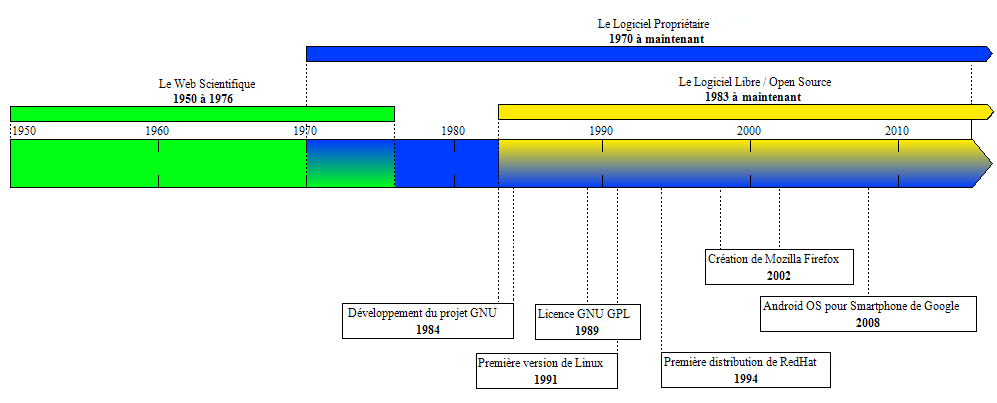
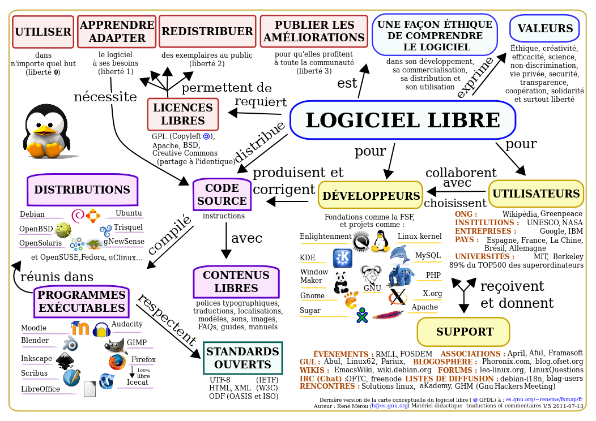

Au fait, c'est quoi, le libre ?
Un logiciel libre est un logiciel qui est distribué selon une licence libre. Plus précisément et de manière un peu simplifiée, un logiciel libre est un logiciel qui peut être utilisé, modifié et redistribué sans restriction par la personne à qui il a été distribué. Un tel logiciel est ainsi susceptible d'être soumis à étude, critique et correction. Cette caractéristique confère aux logiciels libres une certaine fiabilité et réactivité. Mozilla Firefox, Mozilla Thunderbird, OpenOffice.org et VLC sont des exemples de logiciels libres célèbres.

Voici une chronologie de quelques éléments du libre.
Remarques:
•RedHat est l'une des entreprises dédiées aux logiciels Open Source les plus importantes et les plus reconnues. Elle constitue également le premier distributeur du système d'exploitation GNU/Linux.
•GNU est un système d'exploitation constitué de logiciels libres; son développement a rendu possible l'utilisation d'un ordinateur sans logiciel susceptible de bafouer votre liberté.

Et pourquoi se diriger vers le libre?
Une citation de Richard Stallman, programmeur et militant des logiciels libres de droits, dans une iterview, résume bien notre devoir à nous diriger vers le libre :
« Toutes les libertés dépendent de la liberté informatique, elle n’est pas plus importante que les autres libertés fondamentales mais, au fur et à mesure que les pratiques de la vie basculent sur l’ordinateur, on en aura besoin pour maintenir les autres libertés. Profitant de la faiblesse de la démocratie contemporaine, les grandes entreprises sont en train de prendre le contrôle de l’État, ce sont elles qui contrôlent les lois, pas les citoyens. »
De manière plus générale, pour quelq'un de neutre sur le sujet, changer vers un logiciel libre ne peut qu'améliorer son expérience: du fait que les logiciels libres soient beaucoup plus modelables que les non-libres, les possiblités de découverte, d'amélioration et de transformation sont infinies. De plus, les logiciels libres et les systèmes d'exploitations comme Linux avec Unbutu, Xubuntu, Kali etc... nous font découvrir de nouvelles façon d'utiliser un ordinateur! C'est une expérience facile à faire, il y a plein de tutoriels sur Internet pour faire un Dual-Boot (pouvoir être sur 2 systèmes d'exploitations à la fois et pouvoir en changer en redémarrant le pc). Cela permet à un utilisateur novice de pouvoir expérimenter sur son propre ordinateur de nouvelles manière de voir l'univers infini du Libre! Et surtout, ouvrez les yeux!